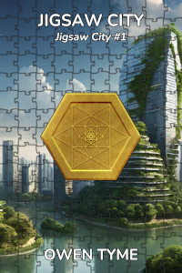

Jigsaw City
Jigsaw City is book one of a series of the same name, which centers on the life of a young woman (Nicole Jacobs) and her quest to reunite the pieces of a magical city that was broken up millions of years before she was born.

Nicole Jacobs is twenty years old and unsure what direction to take in life, because the opportunities available to her are too numerous and no one job fits all of her talents, but she passes the time doing research on dragons. To that end, she hatches a dragon egg, but in the midst of the harrowing work required, she dreams of the ancient, magical City of Kurg, which yearns to be whole.She soon discovers, based on a chance encounter with a small magic item she’d been analyzing, that her mind has been dangerously intertwined with that of the city, which spreads through her brain like a disease, slowly taking over. At first, she’s able to keep it under control by suppressing magic within her own head, but over time, it begins breaking past the road blocks she desperately erects in its path as it inches toward total control.
Seeking a cure, she’s forced to research the ancient city, while the clock ticks down on her sanity and ultimately, her life. Meeting the strange, stone men that made the city, the Ulkun, she finds they have few answers for her, but suggest that if she locates the Architect of Kurg, one of their own kind, he might be of some help. Unfortunately, due to the fact he was trapped inside a small segment of the sealed city for millions of years, alone, he’s quite insane, unhelpful and worse, eventually becomes hostile, forming a plan for galactic domination.
Instead, Nicole seeks the Life Giver, the mysterious being that created the Ulkun and ordered the construction of Kurg, while collecting pieces of the city, in the hopes of attracting their attention.
Will Nicole find a cure, freeing herself from the clutches of Kurg, or will she lose control of her own mind, taken over by the magic city? Will the Architect succeed at replacing everyone in the galaxy with obedient, magically-animated drones with no will of their own or will Nicole stop him?
Release Schedule and Details
The first chapter was published to Royal Road on Saturday, March 8, 2025 and the book was completed on Saturday, June 21, 2025.
Looking For More?
The next book in Jigsaw City is Fey Fighters.